|
Basic Principles of MRI
Margaret M. King, RT (R)(MR) Some Images provided by G. Glenn Coates, M.D. History of Magnetic ResonanceIn 1946, Felix Bloch and Edward Purcell independently discovered that a magnetically energized substance bombarded with RF emitted a "tune" similar to a tuning fork. They found that the nuclei of different atoms absorbed radio waves at different frequencies. In 1952, Bloch and Purcell received the Nobel Prize for their discovery of what was referred to as Nuclear Magnetic Resonance (NMR), eventually to be known as Magnetic Resonance (MRI). In 1970, the medical imaging world significantly changed with the contributions of Dr. Raymond Damidian. Dr. Damidian discovered that the structure and abundance of water in the human body was the key to MR imaging, and that the water (hydrogen) emitted a signal that was both detectable and recordable. Dr. Damidian and his team spent the next seven years diligently designing and creating the first MRI scanner for medical imaging of the human body. It was Paul Lauterbur, however, who implemented the concept of tri-plane gradients used for exciting selective areas of the body (Gx, Gy, and Gz.). MR was earlier referred to and is based on the physics of nuclear magnetic resonance (NMR). MRI is a second generation term for this imaging modality. The term MRI was adopted soon after imaging of the human body became possible as the public could more easily adopt a term for an imaging modality without the word "nuclear" in it. Thus we have magnetic resonance imaging (MRI). |
Magnets and Magnetism3 Types of Magnets There are three types of magnets used commercially in medical imaging. All three provide homogenous large magnetic fields. The main differences are the strengths, energy requirements, production costs, and the magnetic field direction. Permanent Magnets Permanent magnets require very little maintenance. Permanent magnets operate up to approximately 0.4 T. This magnet does not require cryogens or a large power supply. The magnetic field is measured vertically within the bore of the magnet. The main disadvantages of a permanent magnet are the cost of the magnet itself and supporting structures and the varying changes in the magnetic field. Field homogeneity can be an on-going problem in permanent magnets. Resistive Magnets Resistive magnets are composed of coils of wire with a magnetic field induced through it. They are similar to superconductive magnets. The wires are not cooled down by cryogens, and if the current was sent through the coils, but the power disconnected, the current would decrease and eventually be non-existent. The resistive magnet does not require cryogens, however, it needs a constant power supply to maintain a homogenous magnetic field, and can be quite expensive to maintain. Resistive magnets operate at fields no greater that 0.4 T. Superconductive Magnets Superconductive magnets are the most common of all the magnets. The magnetic field is in the direction of the long axis of the cylinder or bore of the magnet. Superconductive magnets are composed of coils of wire carrying current. Since the resistance in the coils can cause the current to decay, cryogens reduce the resistance to almost zero, which will help maintain a homogenous magnetic field over time. Superconductive magnets operate clinically up to 2 T. Magnetic Properties Matter has varying magnetic properties. A diamagnetic substance shows no magnetic properties when outside a magnetic field. Once in the presence of a magnet field, a diamagnetic substance is slightly repelled by the magnetic field. Like a diamagnetic substance, paramagnetic substances also do not have magnetic properties outside a magnetic field. However, once in the presence of a magnetic field, a slight attraction occurs. Ferromagnetic substances are extremely attracted to magnets, and can be dangerous in the clinical setting. Caution should be taken when taking any metallic foreign object into the MRI scan room. The Atom In order to understand MRI, it is necessary to understand the properties of atoms. Atoms consist of a dense nucleus surrounded by orbiting electrons. The nucleus of most atoms is made up of positively charged particles called protons, and neutrally charged particles called neutrons. The nucleus of an atom is always positively charged due the positive protons. The electrons orbiting around the nucleus are extremely small negatively charged particles which balance the positive charge of the nucleus. Chemical properties of elements vary based on the electrical charge of the atoms. An atom with the same number of protons and electrons is chemically neutral and stable. Often, electrons are added or knocked out of the orbits around nuclei, which alters the charge of atom thus creating a positively or negatively charged particle. An atom which is positively or negatively charged is referred to as ionized. |
| 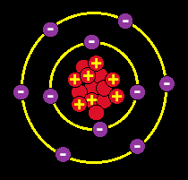 | 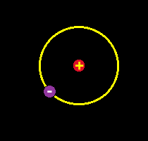 |
| Ionized Atom | Hydrogen Atom |
| The simple nucleus of the hydrogen atom consists
of one proton, and no neutrons. The hydrogen atom has a
positive charge and an atomic number of 1 due to the presence of only
one proton in its nucleus. For the purposes of MR, the hydrogen atom is
referred to as a proton. The abundance of the hydrogen atoms in
the human body, and the large magnetic moment (discussed below)
created by the single proton in the nucleus of the atom, make hydrogen
atoms extremely sensitive to magnetic resonance. Based on these facts,
we will concentrate on the hydrogen atom for the duration of this
section. Hydrogen has the simplest atomic structure compared to all
other elements. There is an abundance of hydrogen in the human body.
Approximately 70% of the body is made up of water which contains two
hydrogen atoms and one oxygen atom. It is the hydrogen atoms that are
focused on to produce an MR image.
Spin The moving (spinning) hydrogen protons create a magnetic field, and thus perform as a tiny magnet with a north and a south pole. Since there are two magnetic poles, the protons are referred to magnet dipoles. Based on the laws of electromagnetism, any electrically charged particle which moves creates a magnetic field called a magnetic moment. This is the property that allows hydrogen protons to behave predictably within an external magnetic field. The motion or the "spin" of the hydrogen atoms can be described as a random combination of the spinning of a top, the spin of a bowling ball and the rotation of the earth around its axis. Understanding the magnetic moment of the hydrogen protons, will lead to an understanding of the alignment of the protons within a magnet. |
| 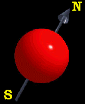 | 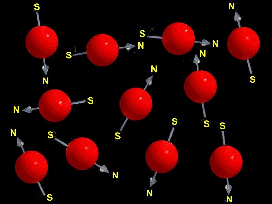 | 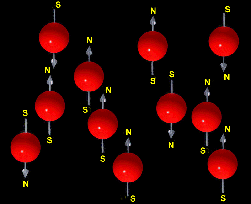 |
| Spinning Proton | No magnetic field present | Magnetic field present |
| Alignment
Hydrogen nuclei magnetic moments are randomly oriented in the absence of an external magnetic field and are considered to have a net magnetization of zero. Once hydrogen protons are placed in the presence of an external magnetic field, they align themselves in one of two directions, parallel or anti-parallel to the net magnetic field which is commonly referred to as the vector B0. The strength of the external magnetic field and the thermal energy of the atoms are the factors which affect the direction of alignment of the hydrogen protons. The high energy protons are strong enough to align themselves against or anti-parallel to the magnetic field, whereas the lower energy protons will align themselves with or parallel to the magnetic field. As the magnetic field increases, there are fewer protons which are strong enough to align anti-parallel to the magnetic field. There are always a larger number of protons aligned parallel with the magnetic field (B0), so once the parallel and anti-parallel protons cancel each other out, only the small number of low energy protons left aligned with the magnetic field create the overall net magnetization of the patient’s body. Even though there are relatively only a few protons creating the net magnetization of the patient’s body, this difference is all that counts. The magnetic moments of these protons are added together and are referred to as net magnetization vector (NMV) or the symbol ‘M’. |
| 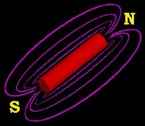 | 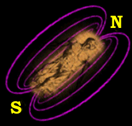 |
| Bar Magnet | Human Magnet |
| Precession and
Resonance
Hydrogen atoms do not actually align directly with the direction of the magnetic field, but rather rotate or wobble around the axis of the magnetic field. The term to describe this secondary spin is precession. Protons actually precess at an angle spinning a cone-shape fashion to the direction of the magnetic field. This action is similar to the action of a spinning top rotating around a vertical axis. The speed at which the protons or the NMV precesses is referred to as the precessional frequency and is measured in megahertz (MHz). |
| 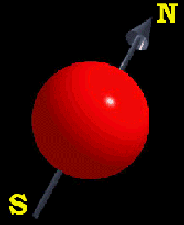 | 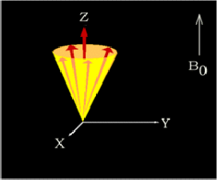 |
| Spinning Proton | Precession |
| The Larmor Frequency
Tesla (T) or gauss is the measure of strength of the magnetic field. One Tesla is equivalent to 10,000 gauss, and is about 20,000 times stronger than the earth’s magnetic field. All protons precess at the same frequency within a magnetic field. The gyro-magnetic ratio of hydrogen is 42.57 MHz/Tesla. The gyro-magnetic ratio is different for each nucleus of different atoms. The frequency is determined by the gyro-magnetic ratio of atoms and the strength of the magnetic field. The Larmor equation is important because it is the frequency at which the nucleus will absorb energy. The absorption of that energy will cause the proton to alter its alignment. In MR imaging, the energy that is transferred is radio frequency waves (RF) and ranges from 1-100 MHz. The Larmor equation governs the value of the precessional frequency, and is follows: Precessional frequency
(w O) = B0 x l At 1 T the precessional frequency of hydrogen is 42.57 MHz (1 T x 42.57 MHz) At 1.5 T the precessional frequency of hydrogen is 42.57 MHz (1.5 T x 63.86 MHz) The stronger the magnetic field, the higher the precessional frequency. If an RF pulse at the Larmor frequency is applied to the nucleus of an atom, the protons will alter their alignment from the direction of the main magnetic field to the direction opposite the main magnetic field. As the proton tries to realign with the main magnetic field, it will emit energy at the frequency of the Larmor frequency. Resonance is referred to as the property of an atom to absorb energy only at the Larmor frequency. This is the basis of MR. An atom will only absorb external energy if that energy is delivered at precisely it’s resonant frequency. The energy must also be delivered at 90° to the net magnetic vector (NMV) and main magnetic field (B0). Otherwise, no energy will be absorbed, resonance will not have occurred and an image cannot be created. Excitation occurs when the proton absorbs the applied energy or resonates. As resonance occurs and the NMV moves out of alignment with the B0 to a pre-specified angle. The deflection of the magnetization or total angle created after the end of the RF pulse is referred to as the flip angle.Longitudinal and Transverse Magnetization The stronger the RF energy applied to the protons, the greater the angle of deflection for the magnetization. The two most common flip angles in MR are 90° and 180° . A 90° pulse will flip the magnetization into the x-y plane (Mxy). A 180° pulse will flip the magnetization through the x-y plane and into the opposite direction of B0. |
| 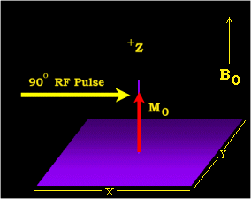 | 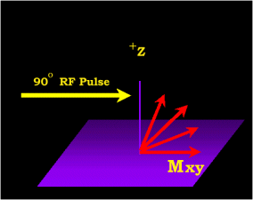 |
| Protons aligned with Z Axis | After 90 degree pulse |
| When a 90° pulse is
applied and the protons are given enough energy to be flipped into the
x-y plane, the net magnetization vector is now in the transverse plane.
B0 or z-axis is now referred to as the longitudinal
plane. The protons are now rotating in the transverse plane at the
Larmor frequency. As well as flipping into the transverse plane, the
protons also begin rotating in phase with each other. When resonance
occurs, all the magnetic moments move into the same path or all flip the
same number of degrees, and they all precess in phase with other.
With the net magnetization in the transverse plane (created with a 90° flip angle), and a receiver coil or antenna in the transverse plane, a voltage is induced within the receiver coil. This oscillating signal voltage over time is the MR signal. The magnitude of the signal is dependent on the magnetization present in the transverse plane. At the termination of the RF, the freely precessing protons in the transverse plane (Mxy) give up energy (RF) in order to try to realign with B0. As the transverse magnetization starts to decay due to the loss of phase coherence, the protons eventually realign with B0. This signal produced by the decay of transverse magnetization is called free induction decay (FID). The amplitude of the FID signal becomes smaller over time as net magnetization returns to equilibrium. Simultaneously, the longitudinal magnetization begins to recover and return to B0 to a state of equilibrium just as if nothing had occurred. After the external RF signal is turned off, two phenomenons simultaneously occur.
These phenomena are discussed in more detail below. In summary, atoms rotate randomly outside the presence of a magnetic field. When in the presence of an external magnetic field, the atoms align either with or opposed to the main magnetic field. The parallel and anti-parallel protons cancel each other out, leaving a relatively small number of protons aligned with the main magnetic field. As an RF signal is applied at the Larmor frequency, the individual protons resonate, or absorb the applied energy, and precess in phase. Depending on the strength of the applied energy, the protons will flip into the x-y plane (transverse magnetization), or exactly the opposite direction of the main magnetic field. The transverse magnetization induces a voltage in an antenna or receiver coil which will be eventually become the MR signal. As the RF is turned off, the protons dephase and lose their coherence as they try to realign with B0. Two phenomenons occur simultaneously. Transverse magnetization decreases (T2 decay), while longitudinal magnetization increases (T1 recovery). Longitudinal and Transverse Relaxation Relaxation is a very important process in MR imaging as it determines the type of signal obtained greatly impacting the type of image generated. When the RF pulse is terminated, the net magnetic vector (NMV) is once again influenced by the main magnetic field (B0) and tries to re-align with it along the longitudinal axis. Protons attempt to return from a state of non-equilibrium to a state of equilibrium. As the NMV gives up its absorbed RF energy while trying to return to B0, the process of relaxation occurs. As relaxation is occurring, magnetization is recovering in the longitudinal plane while decaying in the transverse plane. Longitudinal and transverse magnetization occur at simultaneously but are two completely different processes. To examine the relaxation phenomena further, the net magnetization vector needs to be divided into its two processes; longitudinal and transverse magnetization.
|
| 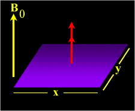 | 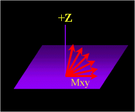 | 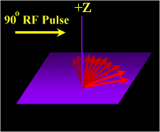 | 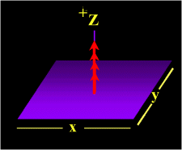 |
| Longitudinal Magnetization | 90 Degree RF Pulse | T2 Dephasing | Longitudinal Relaxation - T1 Recovery |
| Longitudinal
Relaxation
Longitudinal relaxation is the return of longitudinal magnetization to equilibrium (B0) and is termed T1 recovery. As the hydrogen atoms release their energy they previously absorbed to the surrounding tissue (lattice), in their attempt to realign with the main magnetic field, T1 relaxation or T1 recovery occurs. This phenomena is sometimes referred to as "spin-lattice" relaxation and it occurs exponentially over time. That rate of recovery is a time constant and is referred to as T1. T1 recovery is the time it takes for 63% of the longitudinal magnetization to "regrow" or recover in the tissue. Transverse Relaxation As longitudinal magnetization is occurring, it is accompanied by transverse relaxation. Transverse relaxation is the return of transverse magnetization to equilibrium. Although these two processes occur at the same time, they are quite different and thus contribute significantly different information to the resulting MR image. Unlike longitudinal relaxation, transverse relaxation is not a process of dissipation or absorption of energy into tissue. The decay of transverse magnetization is a process called T2 decay. As the amount of magnetization in the x-y (transverse) plane decreases, T2 decay increases. After an RF pulse, hydrogen nuclei are spinning in unison or in-phase with each other. As the magnetic fields of all the nuclei interact with each other, energy is exchanged between those nuclei. The nuclei which began spinning "in-phase", lose their phase coherence or dephase over time and spin in a random fashion. This process results in an exponential decrease or decay in transverse magnetization. Because T2 decay is the result of the exchange of energy between spinning hydrogen nuclei, it is referred to as "spin-spin" relaxation. As T2 decay occurs, the MR signal dies out. The rate of T2 decay is also expressed as a time constant. T2 decay occurs when the transverse magnetization has decreased to 37% of its initial value. |
| 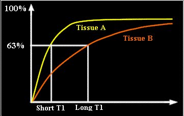 | 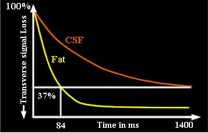 |
| T1 Recovery Curve | T2 Decay Curve |
| Longitudinal
relaxation is a regrowth or an increase in value, whereas transverse
relaxation is a decrease or decay. Although these two processes occur
together, T2 decay almost always occurs more rapidly than the regrowth
of longitudinal magnetization.
Tissue Contrast Due to the T1 and T2 relaxation properties, we can differentiate between various tissues in the body. As well as T1 and T2 contrast in tissues, proton density can also be measured. Proton density is measured by the number of protons per unit of tissue. Various tissues have different T1 and T2 values. These T1 and T2 values significantly influence the type of signal generated during MRI and thus contribute greatly to the MR image. Tissue contrast is affected by not only the T1 and T2 values of specific tissues, but the differences in the magnetic field strength, temperature changes and many other factors. It is not imperative that one memorize the absolute T1 and T2 values in different tissues, but being aware of the values may make a difference when the technologist is programming values for pulse sequences. Fat Versus Water Due to the slow molecular motion of fat nuclei, longitudinal relaxation occurs rather rapidly and longitudinal magnetization is regained quickly. The net magnetic vector realigns with B0 leading to a short T1 time for fat. Water is not as efficient as fat in T1 recovery due to the high mobility of the water molecules. Water nuclei do not give up their energy to the lattice (surrounding tissue) as quickly as fat, and therefore take longer to regain longitudinal magnetization resulting in a long T1 time. As we know, T2 decay is dependent on the interaction of nuclei and the exchanging of energy with near by nuclei. Fat has a very efficient energy exchange and therefore has a relatively short T2. Water is less efficient than fat in the exchange of energy, and therefore has a long T2. |
| T1 and T2 CONSTANTS | ||
| T1 Constants at 1.5 T Controlled by TR |
T2 Constants at 1.5 T Controlled by TE |
|
| Fat | 85 | |
| Muscle | 860 | 45 |
| White matter | 780 | 90 |
| Gray matter | 920 | 100 |
| CSF | 3000 | 1400 |
TR and TE are
parameters controlled by the operator and are usually measured in
milliseconds.
The T1 constants above will indicate how quickly the spinning nuclei will emit their absorbed RF into the surrounding tissue. The T2 constants above will indicate how quickly the spinning nuclei will decay to 37% of the initial transverse magnetization. T1, T2 and Proton Density Contrast Fat has a shorter T1 time than water, therefore the fat vector will realign more quickly with the main magnetic field. It is obvious then that fat has a larger longitudinal component than water. After a 90° pulse, the longitudinal magnetization of both fat and water are flipped into the transverse plane. As previously mentioned, fat has a larger longitudinal component prior to an RF pulse, and it has a larger transverse component after an RF pulse. Due to the larger longitudinal and transverse magnetization, fat has a higher signal and will appear bright on a T1 contrast MR image. Conversely, water has less longitudinal magnetization prior to an RF pulse, therefore less transverse magnetization after an RF pulse yielding low signal appearing dark on a T1 contrast image. Images created with TR's and TE's to enhance T1 contrast are referred to as T1-weighted images. The previously learned concepts of transverse magnetization apply for T2 contrast. Fat has a shorter T2 time than water and relaxes or decays more readily than water. Since the amount of transverse magnetization in fat is small, fat generates very little signal on a T2 contrast image and appears dark. Water has a very high T2 constant, therefore has very high T2 signal and thus appears bright on a T2 contrast image. Images created with TR's and TE's to enhance T2 contrast are referred to as T2-weighted images. Proton density contrast is a quantitative summary of the number of protons per unit tissue. The higher the number of protons in a given unit of tissue, the greater the transverse component of magnetization, and the brighter the signal on the proton density contrast image. Conversely the lower the number of protons in a given unit of tissue, the less the transverse magnetization and the darker the signal on the proton density image. |
| 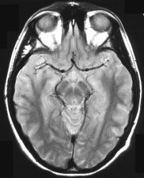 | ||
| T1 Weighting | Proton Density Weighting | T2 Weighting |
| T1 and T2
Weighting
Most all MR imaging will entail T1 and T2-weighted images among many other types of imaging. T1 and T2 images are the most common contrasts obtained in MRI. T1-weighted images are obtained to compare the T1 differences in tissues or to compare the relaxation rates of the tissue being examined. T2-weighted images are obtained to compare the T2 contrast in tissues and compare the transverse relaxation rates. Parameters are manipulated by the user to obtain the type of image contrast desired. |
| RF Signal Intensities in Tissue | |
| High-Intensity Signal | Low-Intensity Signal |
| Short T1 | Long T1 |
| Long T2 | Short T2 |
| High proton density | Low proton density |
|
As previously stated, TR will control the T1-weighting of an MR image with a short TR maximizing T1-weighting and a long TR maximizing proton density-weighting TE controls the T2-weighting of an MR image with a short TE minimizing T2-weighting and a long TE maximizing T2-weighting. |
| TYPICAL TE and TR Values | |
| Short TE | 10-25 ms |
| Long TE | 60-100+ ms |
| Short TR | 100-900 ms |
| Long TR | 1800+ ms |
| IMAGE WEIGHTING PARAMETERS | ||
| TR | TE | |
| T1 Weighting | Short | Short |
| Proton Density Weighting | Long | Short |
| T2 Weighting | Long | Long |
| T1-Weighted
Imaging: Emphasis is made on the differences on longitudinal
relaxation rates by utilizing a short TR and short TE. The short TR
allows full recovery of tissues with a short T1 (fat) to recover quickly
while allowing only partial recovery of tissues with a long TR (CSF).
The short TE used to obtain a T1-weighted image will allow minimal loss
of transverse magnetization due to T2 relaxation. Basically, short TR
increases T1 effects with the short TE minimizes T2 effects of
tissue.
T2-Weighted Imaging: Emphasis is made on the differences on transverse relaxation rates by utilizing a long TR and long TE. The long TR allows tissues to reach complete longitudinal magnetization which will reduce T1 effects. The long TE will allow for the loss of transverse signal enhancing T2 effects. Fluid has a very long T2 and is frequently associated with pathology, so it is important to take advantage of the imaging parameters to accentuate signal differences. There are many parameters which significantly contribute to the contrast of an image. Most of these parameters are controlled or at least influenced by the technologist creating the images. Care must be taken to create the best possible MR images which will ensure a more accurate diagnosis by the radiologist. Parameters contributing to an MR image should be manipulated only by an experienced MR technologist who is aware of all the factors which are changing during the manipulation. |